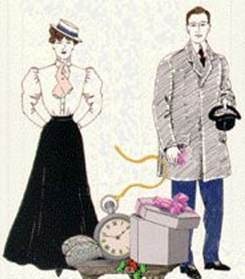
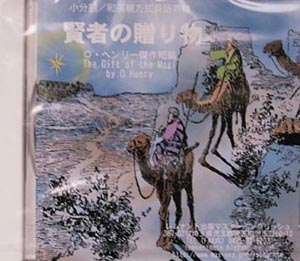

| 聞き流すだけで英語をマスター 賢者の贈物【音声付】中級用 | |
| 小分割/和英順方式普及会 | |
| Kisosha (2013) | |
関連商品：辞書なしで英語がスラスラ読める 賢者の贈物
賢者の贈り物
The Gift of the Magi
by O. Henry
（小分割/和英順方式英語教材）
聞き流すだけで
英語をマスター
日本語→英語の順、
細かい区切りで学ぶ英語教材
音声の再生について
■本文中の【音声再生】リンクをクリックしても、各章ごとの再生ができます（これはインターネット接続が必要です）。
目次 Table of Contents

O. Henry
◎辞書なしでも大体の意味はわかるようになっていますが、英単語の正確な意味や発音を知りたい場合は、Kindleの場合ですと、単語上を長タッチすると表示されます。
［チェックポイント］
今から学ぶ「賢者の贈り物」は、安アパートに暮らしながらも深く愛し合っている若い夫婦――ジムとデラの物語です。もうすぐクリスマスというときに、二人はクリスマスプレゼントを考え始めます。この物語を繰り返し聞くことによって、英語を早くマスターすることができます。ここで、物語に出てくる単語をチェックしておきましょう。
gift 贈り物
Magi 賢者（キリストの降誕を祝って贈り物を持ってきた東方の３人の賢者。聖書のマタイの福音書２章より）
penny １セント硬貨
bulldoze 強引にけちる、おどす
imputation 非難
parsimony けち
flop down ばたりと倒れる
instigate 扇動する、引き起こす
subside 静まる、沈下する
coax 口説き落とす
appertain 属する
flat 共同住宅、アパート
sterling 本物の
agile 身軽な
reflection 鏡などに映る姿、反映
depreciate 価値を下げる
ripple さざ波を立てる
cascade 滝
splash はねを飛ばす
flutter どぎまぎする
collect herself 彼女自身を落ち着かせる
ransack くまなく捜す
fob chain 懐中時計用の鎖
on the sly こっそりと
ravage 破壊、破壊の跡
truant ずる休みした者
laboriously やっとの思いで、骨を折って
nimble 敏捷な
crave 切望する
adorn 飾る
ardent 熱心な
（１）
１回に１セントか２セントずつ貯めたものだ Pennies saved one and two at a time 雑貨屋で強引にけちって bybulldozing the grocer また八百屋で and the vegetable man そして肉屋で and the butcher 顔を赤らめてまでして untilone'scheeksburned けちだという無言の非難をされて with the silentimputation of parsimony そんなしみったれた買い方にである that suchclose dealingimplied.
デラは３度数えた Three times Della counted it. １ドル８７セント One dollar and eighty- seven cents. そして明日はクリスマスだった And the next day would be Christmas.
どうしたって何もすることがなかった There was clearly nothing to do みすぼらしい小さなソファに身を投げ出すよりほかにbut flop down on the shabby little couch そしておいおい泣くよりほかに and howl.
だからデラは泣いた So Della did it. これは人生観への反映も引き起こす Which instigates themoral reflection 人生はむせび泣きで成り立っているという that life is made up of sobs, またすすり泣きと sniffles, 微笑みで and smiles, なかではすすり泣きが一番多くを占めている with snifflespredominating.
（２）
週８ドルの家具付アパートだ A furnished flat at $8 per week. これは乞食というほどのものではない It did not exactly beggardescription, しかしそうした名前をつけたのは明らかに but it certainly had that word 浮浪者狩りの警官隊を用心してのことだ on the lookout for themendicancysquad.
下の玄関口には In the vestibule below 郵便受けがあった was a letter-box 手紙など来そうにないが into which no letter would go, そして電気の玄関ベルのボタンがあった and an electric button 人間の指ではどうやっても鳴らなかったが from which nomortal finger couldcoax a ring.
またそこに貼ってあったのは Alsoappertaining thereunto 「ジェームズ・ディリンガム・ヤング」という名の記された名刺だった was a cardbearing the name "Mr. James Dillingham Young."
かつて「ディリンガム」はそよ風に踊っていた The "Dillingham" had beenflung to the breeze 以前の景気が良かった時代には during a former period ofprosperity そのときこの（ミドルネームの）所有者（である彼）は週給３０ドルをもらっていた when its possessor was being paid $30 per week.
しかし収入が２０ドルに減ってしまった今では Now, when the income wasshrunk to $20, though, 夫婦は真剣に考えていた they were thinking seriously それを謙遜で控えめな「Ｄ」に縮めて書こうかと ofcontracting to a modest and unassuming D.
でもジェームズ・ディリンガム・ヤング氏が帰宅して二階のアパートにたどり着くといつも But whenever Mr. James Dillingham Young came home and reached hisflat above 彼は「ジム」と呼ばれて he was called "Jim" 奥さんに強く抱きしめられるのだった and greatly hugged by Mrs. James Dillingham Young, すでにご紹介したデラである already introduced to you as Della. それはなかなか結構な話だが Which is all very good.
（３）
彼女は窓のそばに立ち She stood by the window ぼんやりと眺めた and looked out dully 灰色の猫が灰色の裏庭の灰色の塀の上を歩いているのを at a gray cat walking a gray fence in a gray backyard.
明日はクリスマスだった Tomorrow would be Christmas Day, そして彼女には１ドル８７セントしかない and she had only $1.87 それでジムにプレゼントを買おうというのだ with which to buy Jim a present.
彼女はもう何ヶ月も節約してきた She had been saving every penny she could for months, それでこの結果だった with this result. 週給２０ドルではこれ以上は無理だ Twenty dollars a week doesn't go far.
支出は彼女の予想（計算）を上回った Expenses had been greater than she had calculated. 支出とはそういうものだ They always are.
ジムにプレゼントを買うのにたった１ドル８７セントしかないなんて Only $1.87 to buy a present for Jim. 彼女のジムに Her Jim.
何時間も幸福な時間をすごしてきたのに Many a happy hour she had spent なにか彼にいいものをと考えて planning for something nice for him.
なにか素晴らしい Something fine めったにない and rare 本物をと andsterling なにか少しでも価値あるものを --something just a little bit near to being worthy ジムに持ってもらう名誉になるものをと of the honor of beingowned by Jim.
（４）
たぶんあなたは見たことがあるだろう Perhaps you have seen 週８ドルの安アパートの鏡というものを a pierｰglass in an $8 flat.
非常にやせていて A very thin また非常に身軽な人なら and very agile person may, 縦に断片的に映る姿をすばやくつなぎ合わせて by observing his reflection in a rapidsequence oflongitudinalstrips, 自分の全身像をかなり正確に得ることができるかもしれない obtain a fairly accurateconception of his looks.
デラはほっそりしていたから Della, being slender, この術を身につけていた had mastered theart.
突然彼女はふり向いて窓から離れ Suddenly she whirled from the window 鏡の前に立った and stood before the glass. 彼女の目はきらきら輝いていた Her eyes were shining brilliantly, しかし顔色は20秒前から蒼白になっていた but her face had lost its color within twenty seconds. 彼女はさっと髪をたらして Rapidly she pulled down her hair それをいっぱいにたらした and let it fall to its full length.
ところでジェイムズ・ディリンガム・ヤング夫妻には二つの所有物があった Now, there were two possessions of the James Dillingham Youngs 彼らはそれを非常に自慢していた in which they both took a mightypride.
一つはジムの金時計だった One was Jim's gold watch それは父また祖父から譲り受けたものだ that had been his father's and his grandfather's.
もう一つはデラの髪だった The other was Della's hair. もしシェバの女王（聖書に出てくるソロモン王を訪問した美しい異国の女王）がHad the queen of Sheba アパートの通風口を隔てた部屋に住んでいたならlived in the flat across the airshaft, デラはいつか髪を渇かすために窓の外にたらして Della would have let her hair hang out the window some day to dry 女王の宝石や贈り物を顔色なからしめたことだろう just todepreciateHer Majesty's jewels and gifts.
もしソロモン王が門番で Had King Solomon been the janitor, 地下室に積み上げた彼のすべての宝と共にいたら with all his treasures piled up in the basement, ジムはきっと自分の時計を取り出して見せたことだろう Jim would have pulled out his watch 彼がそこを通るたびに every time he passed, 王がうらやましがって顎髭をひねるのを見たいばかりに just to see himpluck at his beardfrom envy.
（５）
膝の下にまで達して It reached below her knee ガウンのようだった and made itself almost a garment for her.
そののち彼女はまたそれを結い上げた And then she did it up again 神経質そうに、すばやく nervously and quickly.
一瞬彼女はひるんで Once she faltered for a minute 立ちつくし and stood still 1,2滴の涙をすり切れた赤い絨毯の上に落とした while a tear or twosplashed on the worn red carpet.
古びた茶色のジャケットを着てOn went her old brown Jacket; 古びた茶色の帽子をかぶった on went her old brown hat. スカートを一回転させてから With awhirl of skirts 眼にはまだ光るものを溜めたまま and with the brilliantsparkle still in her eyes, 彼女はどきまぎしてドアの外に出 she fluttered out the door 階段をおりて街路に出た and down the stairs to the street.
彼女が足を止めた所には Where she stopped 看板にこうあった the sign read: 「マダム・ソフロニィ "Mme. Sofronie. かつら類一式 Hair Goods ofAll Kinds."」 デラは階段を一つかけあがると One flight up Della ran, 自分を落ち着かせた and collected herself, はあはあと言いながら panting.
マダムは Madame, 大柄で色は白すぎるし large, too white, 冷たい感じで chilly, とても「ソフロニィ」（聡明を意味するギリシャ語源の女性の名）には見えなかった hardly looked the "Sofronie."
「私の髪を買って下さる "Will you buy my hair?"」とデラは尋ねた asked Della.
「髪は買いますよ "I buy hair,"」と女主人は答えた said Madame. 「帽子を取って "Take your hat off どんな感じかちょっと見てみましょう and let's have asight at the looks of it."」
茶色の滝がさざ波を打って流れ落ちたDown rippled the brown cascade.
「20ドルね "Twenty dollars,"」とマダムは言った said Madame, 手慣れた手つきで髪の房を持ち上げながら lifting themass with a practised hand.
「すぐください "Give it to me quick,"」 とデラは言った said Della.
（６）
ついに彼女は見つけた She found it at last. まさにジムのために作られたようなものだった It surely had been made for Jim 他の誰のためでもない and no one else. それほどのものはなかった There was no other like it どの店にも in any of the stores, 彼女は店という店をくまなく見て回ったのだ and she hadturned all of them inside out.
それは懐中時計用のプラチナ製の鎖だった It was a platinumfob chain 簡素で上品なデザイン simple and chaste in design, その価値を十分に主張していた properly proclaiming its value 実質だけで by substance alone けばけばしい装飾ではなく and not bymeretricious ornamentation-- 立派なものはすべてそうあるべきだが as all good things should do.
あの時計にもよく似合う It was even worthy of The Watch. 彼女はそれを見たとたん As soon as she saw it ジムのものでなければならないと思った she knew that it must be Jim's. それはジム自身にも似ていた It was like him. 静かだが価値がある Quietness and value-- その形容が両方に当てはまった the descriptionapplied to both.
店員は代金21ドルを彼女からもらった Twenty-one dollars they took from her for it, 彼女は急いで家に帰った and she hurried home 残った87セントを持って with the 87 cents. この鎖をあの時計につけたら With that chain on his watch ジムは堂々と時間を気にすることができるだろう Jim might beproperlyanxious about the time どんな人の中でも in any company.
時計は立派だったが Grand as the watch was, 彼はときどきこっそり時計をのぞいていたのである he sometimes looked at iton the sly 古い革ひもを使っていたのでon account of the old leather strap that he used 鎖の代わりに in place of a chain.
（７）
彼女はカール用の鏝（こて）を取り出した She got out her curling irons そしてガスに火をつけ and lighted the gas (髪をバッサリ切ってしまった状態の）惨状をつくろう作業にとりかかった and went to work repairing theravages 愛情に加えられた気前の良さによる惨状である made by generosity added to love. これはいつも大変な仕事だ Which is always a tremendous task, 諸君、一大事業だよ dear friends--a mammoth task.
40分もすると Within forty minutes 彼女の頭は小さな密集したカールでおおわれた her head was covered with tiny, close-lying curls まるで学校をずる休みした小学生の男の子だった that made her look wonderfully like atruant schoolboy.
彼女は鏡に映る自分の姿をながめた She looked at her reflection in the mirror 長く、注意深く、また冷ややかに long, carefully, andcritically.
「（こんな頭にしたことで）たとえジムが私を殺さないにしても "If Jim doesn't kill me,"」と彼女はつぶやいた she said to herself, 「もう一度私を見る前に "before he takes a second look at me, 言うでしょうね he'll say コニー島のコーラス・ガールみたいだ、ぐらいのことは I look like a Coney Island chorus girl. でも、どうしたらいいの But what could I do-- ああ、どうしたらいいの oh! what could I do たった１ドル87セントで with a dollar and eighty- seven cents?"
７時にはコーヒーがつくられた At 7 o'clock the coffee was made またフライパンが（料理用）ストーブの奥の方にのせられ and the frying-pan was on the back of the stove いつでもチョップ（骨つきの羊・豚などの厚切り肉料理）をつくれるように暖められた hot and ready to cook the chops.
（８）
すると聞こえた Then she heard 一階の階段での彼の足音 his step on the stair away down on the first flight, 彼女は一瞬青くなった and she turned white for just a moment.
彼女には無言の小さな祈りをする癖があったのだが She had a habit for saying little silent prayer 日常の小さなことでも about the simplest everyday things, このときは低く声に出した and now she whispered: 「どうか神様 "Please God, あの人に今でも私を美しいと思わせて下さい make him think I am still pretty."」
ドアが開き The door opened ジムが入ってきて and Jim stepped in ドアを閉めた and closed it. 彼はやせて He looked thin とても真剣な顔をしていた and very serious. かわいそうに Poor fellow, 彼はまだほんの22歳だったのだ he was only twenty-two-- それでいて家庭の重荷を負っていた and to be burdened with a family! 新しいオーバーコートもいるし He needed a new overcoat 彼には手袋もなかった and he was without gloves.
ジムは入るなり立ち止まってしまった Jim stopped inside the door, うずらの匂いをかぎつけたセッター犬のように動けなくなってしまったのだ as immovable as a setter at thescent of quail.
（９）
それは怒りではなく It was not anger, 驚きでも nor surprise, 不満でも nor disapproval, 恐怖でもなかった nor horror, また彼女が覚悟していたどんな感情でもなかった nor any of the sentiments that she had beenprepared for. 彼は単にじっと彼女をみつめていた He simply stared at her fixedly そんな奇妙な表情を浮かべて with thatpeculiar expression on his face.
デラはよろけるようにテーブルを離れ Della wriggled off the table 彼に歩み寄った and went for him.
「ねえ、ジム "Jim, darling,"」と彼女は言った she cried, 「そんな眼で私を見ないで "don't look at me that way. 私が髪を切って売ったのは I had my hair cut off and sold クリスマスを過ごせなかったからよ because I couldn't have lived through Christmas あなたにプレゼントをあげずには without giving you a present.
髪ならまた伸びるわ It'll grow out again-- おこらないでね you won'tmind, will you? 仕方なかったのよ I just had to do it. 私の髪は伸びがとても早いわ My hair grows awfully fast. クリスマスおめでとうと言って、ジム Say `Merry Christmas!' Jim, 楽しくしましょう and let's be happy.
あなたにはわからないでしょう You don't know どんなにすてきな what a nice-- どんなに美しくて素敵な贈り物を私が買ってきたか what a beautiful, nice gift I've got for you."」
「髪を切ってしまったのか "You've cut off your hair?"」 とジムは、やっとの思いで尋ねた asked Jim,laboriously, まるでまだその明白な事実に達していないかのように as if he had not arrived at thatpatent fact yet すでに懸命に思いをめぐらした後でも even after the hardestmental labor.
（10）
ジムはいぶかじげに部屋を見回した Jim lookedabout the room curiously.
「もう君の髪はないと言うんだね "You say your hair is gone?"」と彼は言った he said, ほとんど腑抜けの状態になって with an air almost ofidiocy.
「探すことないわ "You needn't look for it,"」とデラは言った said Della. 「売ったのよ "It's sold, 売って、もうなくなったのよ I tell you--sold and gone, too. ねえ、今夜はクリスマス・イブよ It's Christmas Eve, boy. 優しくして Be good to me, あなたのためにしたことなのよ for it went for you. 私の髪の毛は（神様に）数えられていると思うけど Maybe the hairs of my head were numbered,"」(聖書マタイの福音書10:30より）
と、にわかに彼女は真顔で甘い声になって続けた she went on with sudden serious sweetness,
「でもあなたに対する私の愛情は誰にも数えられないわ "but nobody could ever count my love for you. チョップを火にかける？ ジム Shall I put the chops on, Jim?"」
ジムはたちまち呆然自失から覚めたようだった Out of histrance Jim seemed quickly to wake. 彼はデラを抱きしめた He enfolded his Della.
ここで10秒間ほど For ten seconds 私たちはよく見てみよう let usregard 慎重な調査をもって withdiscreet scrutiny 取るに足らない問題を someinconsequential object 少し別の方向に in the other direction.
週給８ドルと年俸100万ドル Eight dollars a week or a million a year-- その違いは何だろう what is the difference? 数学者や機知に富む人でも A mathematician or a wit 間違った答えをすることだろう would give you the wrong answer.
あの東方の賢者たち（キリストの降誕を祝って贈り物を持ってきた東方の３人の賢者。マタイの福音書２章より）は貴重な贈り物を持ってきた Themagi brought valuable gifts, だがその答えはそれらの中にはなかった but that was not among them. この不可解な主張はあとで光を当てられることになる This dark assertion will beilluminatedlater on.
（11）
「誤解しないでくれ、デル（デラの省略形） "Don't make any mistake, Dell,"」と彼は言った he said, 「ぼくについてだよ "about me. 何もないさ I don't think there's anything 髪を切ろうと顔を剃ろうとシャンプーしようと in the way of a haircut or a shave or a shampoo そんなことで僕の妻を好きでなくなるなんてことは that could make me like my girl anyless.
でもその包みを開けたら But if you'll unwrap that package ぼくがどうして最初呆然となったのか理由がわかるよ you may see why youhad me going a while at first."」
白い指 White fingers そして紐と紙をひき裂く敏捷さ and nimbletore at the string and paper. 続いて我を忘れた喜びの声 And then anecstatic scream of joy; だが次の瞬間 and then, ああ、女性特有の早変わり alas! a quick feminine change ヒステリックな涙と号泣に to hysterical tears and wails, こうして部屋の主人はあらゆる手を尽くして妻を慰めねばならなかったのであるnecessitating theimmediateemployment of all the comforting powers of the lord of the flat.
そこには櫛が入っていたからであるFor there lay The Combs-- 横髪と後ろ髪用の櫛のセットだった the set of combs, side and back, それはブロードウェーのウィンドーに飾ってあって、デラが長くあこがれていたものだった that Della hadworshipped long in a Broadway window.
美しい櫛だった Beautiful combs, 本物のべっ甲だ puretortoise shell, ふちに宝石をちりばめていた with jewelled rims-- 似合いの色だった just theshade あのなくなってしまった美しい髪にさすには to wear in the beautifulvanished hair.
高価なものだということはわかっていたから They were expensive combs, she knew, 彼女の心はただ欲しくてあこがれていただけだった and her heart had simplycraved and yearned over them 持てるという一抹の希望もなく without theleast hope of possession. それが今自分のものなのだ And now, they were hers, しかし長いふさふさした髪は but the tresses その待望の髪飾りを飾るはずだったのに that should haveadorned thecovetedadornments なくなっていたのだ were gone.
しかし彼女は櫛をしっかと胸に抱きしめた But she hugged them to herbosom, しばらくして and at length ようやく彼女は顔を上げた she was able to look up かすんだ眼で with dim eyes そして微笑んで言った and a smile and say: 「私の髪はとても早く伸びるのよ、ジム "My hair grows so fast, Jim!"」
デラは飛び跳ねる子猫のように櫛を踊らせては Andthem Della leaped up like a little singed cat 「うわーっ」と叫んでいた and cried, "Oh, oh!"
（12）
にぶい光を放つその貴金属は The dull precious metal 彼女のきらめく熱心な精神を反映して輝いているようだった seemed to flash with a reflection of her bright andardent spirit.
「しゃれてない？ ジム "Isn't it a dandy, Jim? 町中探して見つけたのよ Ihunted all over town to find it. これからは日に100回も時間を見ないではいられなくなるわよ You'll have to look at the time a hundred times a day now. さあ時計を出して Give me your watch. どんなふうか見たいのよ I want to see how it looks on it."」
言われた通りにする代わりに Instead ofobeying, ジムはソファに寝転がると Jim tumbled down on the couch 頭の後ろに手をやって and put his hands under the back of his head 微笑んだ and smiled.
「デル（デラ）"Dell,"」と彼は言った said he, 「ぼくたちのクリスマス・プレゼントはすこし置いておいて "let's put our Christmas presents away (将来のために）しばらくしまっておこう andkeep 'em a while. いま使うには立派すぎるよ They're too nice to use just at present. ぼくは時計を売ったんだ I sold the watch 櫛を買うお金を作ろうとして to get the money to buy your combs. さあ、チョップを火にかけてくれないか And nowsuppose you put the chops on."」
ご存知のようにあの東方の賢者たちは The magi, as you know, 賢明な人たちだった were wise men-- すばらしく賢明な人たちだった wonderfully wise men-- 彼らは飼い葉桶の中の「みどりご」（イエス）に贈り物を持ってきた who brought gifts to theBabe in themanger.
彼らはクリスマスに贈り物を贈る術を発明した They invented the art of giving Christmas presents. 賢明だったから Being wise, 彼らの贈り物も疑いもなく賢明なものだ their gifts were no doubt wise ones, 重複したら取り替える特権もおそらく持っていたことだろう possibly bearing the privilege of exchange in case of duplication.
そしてここに And here 私がつっかえつっかえ読者に語ってきたのは I havelamely related to you アパート住まいの愚かな二人の人の子のたわいもない物語だ theuneventfulchronicle of two foolish children in a flat 彼らは愚かにも犠牲にしてしまった who most unwisely sacrificed お互いのために家で最も大切な宝を for each other the greatest treasures of their house.
しかし現代の賢明な人たちに対する最後の言葉として But in a last word to the wise of these days こう言っておきたい let it be said 贈り物をするすべての人々の中で that of all who give gifts 彼ら二人こそ最も賢明だったのだ these two were the wisest.
ああ、贈り物をしたり、もらったりするすべての人々よ O all who give and receive gifts, 彼らのような人々こそが最も賢明なのだ such as they are wisest. どこにいようと彼らは最も賢明なのである Everywhere they are wisest. 彼らこそ賢者である They are the magi.
[原文]
（１）
There was clearly nothing to do but flop down on the shabby little couch and howl. So Della did it. Which instigates the moral reflection that life is made up of sobs, sniffles, and smiles, with sniffles predominating.
（２）
In the vestibule below was a letter-box into which no letter would go, and an electric button from which no mortal finger could coax a ring. Also appertaining thereunto was a card bearing the name "Mr. James Dillingham Young."
The "Dillingham" had been flung to the breeze during a former period of prosperity when its possessor was being paid $30 per week. Now, when the income was shrunk to $20, though, they were thinking seriously of contracting to a modest and unassuming D. But whenever Mr. James Dillingham Young came home and reached his flat above he was called "Jim" and greatly hugged by Mrs. James Dillingham Young, already introduced to you as Della. Which is all very good.
（３）
Twenty dollars a week doesn't go far. Expenses had been greater than she had calculated. They always are. Only $1.87 to buy a present for Jim. Her Jim. Many a happy hour she had spent planning for something nice for him. Something fine and rare and sterling--something just a little bit near to being worthy of the honor of being owned by Jim.
（４）
Suddenly she whirled from the window and stood before the glass. her eyes were shining brilliantly, but her face had lost its color within twenty seconds. Rapidly she pulled down her hair and let it fall to its full length.
Now, there were two possessions of the James Dillingham Youngs in which they both took a mighty pride. One was Jim's gold watch that had been his father's and his grandfather's. The other was Della's hair. Had the queen of Sheba lived in the flat across the airshaft, Della would have let her hair hang out the window some day to dry just to depreciate Her Majesty's jewels and gifts.
Had King Solomon been the janitor, with all his treasures piled up in the basement, Jim would have pulled out his watch every time he passed, just to see him pluck at his beard from envy.
（５）
On went her old brown Jacket; on went her old brown hat. With a whirl of skirts and with the brilliant sparkle still in her eyes, she fluttered out the door and down the stairs to the street.
Where she stopped the sign read: "Mne. Sofronie. Hair Goods of All Kinds." One flight up Della ran, and collected herself, panting. Madame, large, too, white, chilly, hardly looked the "Sofronie."
"Will you buy my hair?" asked Della.
"I buy hair," said Madame. "Take yer hat off and let's have a sight at the looks of it."
Down rippled the brown cascade.
"Twenty dollars," said Madame, lifting the mass with a practised hand.
"Give it to me quick," said Della.
（６）
She found it at last. It surely had been made for Jim and no one else. There was no other like it in any of the stores, and she had turned all of them inside out. It was a platinum fob chain simple and chaste in design, properly proclaiming its value by substance alone and not by meretricious ornamentation--as all good things should do.
It was even worthy of The Watch. As soon as she saw it she knew that it must be Jim's. It was like him. Quietness and value--the description applied to both. Twenty-one dollars they took from her for it, and she hurried home with the 87 cents. With that chain on his watch Jim might be properly anxious about the time in any company. Grand as the watch was, he sometimes looked at it on the sly on account of the old leather strap that he used in place of a chain.
（７）
Within forty minutes her head was covered with tiny, close-lying curls that made her look wonderfully like a truant schoolboy. She looked at her reflection in the mirror long, carefully, and critically.
"If Jim doesn't kill me," she said to herself, "before he takes a second look at me, he'll say I look like a Coney Island chorus girl. But what could I do--oh! what could I do with a dollar and eighty- seven cents?"
At 7 o'clock the coffee was made and the frying-pan was on the back of the stove hot and ready to cook the chops.
（８）
She had a habit for saying little silent prayer about the simplest everyday things, and now she whispered: "Please God, make him think I am still pretty."
The door opened and Jim stepped in and closed it. He looked thin and very serious. Poor fellow, he was only twenty-two--and to be burdened with a family! He needed a new overcoat and he was without gloves.
Jim stopped inside the door, as immovable as a setter at the scent of quail.
（９）
Della wriggled off the table and went for him.
"Jim, darling," she cried, "don't look at me that way. I had my hair cut off and sold because I couldn't have lived through Christmas without giving you a present. It'll grow out again--you won't mind, will you? I just had to do it. My hair grows awfully fast. Say `Merry Christmas!' Jim, and let's be happy. You don't know what a nice-- what a beautiful, nice gift I've got for you."
"You've cut off your hair?" asked Jim, laboriously, as if he had not arrived at that patent fact yet even after the hardest mental labor.
（10）
Jim looked about the room curiously.
"You say your hair is gone?" he said, with an air almost of idiocy.
"You needn't look for it," said Della. "It's sold, I tell you--sold and gone, too. It's Christmas Eve, boy. Be good to me, for it went for you. Maybe the hairs of my head were numbered," she went on with sudden serious sweetness, "but nobody could ever count my love for you. Shall I put the chops on, Jim?"
Out of his trance Jim seemed quickly to wake. He enfolded his Della. For ten seconds let us regard with discreet scrutiny some inconsequential object in the other direction. Eight dollars a week or a million a year--what is the difference? A mathematician or a wit would give you the wrong answer. The magi brought valuable gifts, but that was not among them. This dark assertion will be illuminated later on.
（11）
"Don't make any mistake, Dell," he said, "about me. I don't think there's anything in the way of a haircut or a shave or a shampoo that could make me like my girl any less. But if you'll unwrap that package you may see why you had me going a while at first."
White fingers and nimble tore at the string and paper. And then an ecstatic scream of joy; and then, alas! a quick feminine change to hysterical tears and wails, necessitating the immediate employment of all the comforting powers of the lord of the flat.
For there lay The Combs--the set of combs, side and back, that Della had worshipped long in a Broadway window. Beautiful combs, pure tortoise shell, with jewelled rims--just the shade to wear in the beautiful vanished hair.
They were expensive combs, she knew, and her heart had simply craved and yearned over them without the least hope of possession. And now, they were hers, but the tresses that should have adorned the coveted adornments were gone.
But she hugged them to her bosom, and at length she was able to look up with dim eyes and a smile and say: "My hair grows so fast, Jim!"
And them Della leaped up like a little singed cat and cried, "Oh, oh!"
（12）
"Isn't it a dandy, Jim? I hunted all over town to find it. You'll have to look at the time a hundred times a day now. Give me your watch. I want to see how it looks on it."
Instead of obeying, Jim tumbled down on the couch and put his hands under the back of his head and smiled.
"Dell," said he, "let's put our Christmas presents away and keep 'em a while. They're too nice to use just at present. I sold the watch to get the money to buy your combs. And now suppose you put the chops on.
The magi, as you know, were wise men--wonderfully wise men--who brought gifts to the Babe in the manger. They invented the art of giving Christmas presents. Being wise, their gifts were no doubt wise ones, possibly bearing the privilege of exchange in case of duplication. And here I have lamely related to you the uneventful chronicle of two foolish children in a flat who most unwisely sacrificed for each other the greatest treasures of their house.
But in a last word to the wise of these days let it be said that of all who give gifts these two were the wisest. O all who give and receive gifts, such as they are wisest. Everywhere they are wisest. They are the magi.
（付録）
【ボスコム谷のミステリー】
【イソップ物語】

北風と太陽
The North Wind and the Sun
北風がまず自分の力を試して The North Wind first tried his power 精一杯吹きました and blew with all his might, でも突風が強烈になればなるほど but the keener his blasts, 旅人はますます服を肌身に押さえたのです the closer the Traveler wrapped his cloak around him, それで結局 until at last, 勝利の希望をすべて放棄して resigning all hope of victory, 風は太陽を呼び出しました the Wind called upon the Sun 何ができるかを見るためです to see what he could do.
太陽は突然 The Sun suddenly 全力で暖かい日差しを送りました shone out with all his warmth. 旅人は The Traveler 温暖な光線を感じるやいなや no sooner felt his genial rays 着物を一つまた一つと脱いでいきました than he took off one garment after another, ついには and at last, 暑さに全くまいってしまって fairly overcome with heat, 裸になり undressed 道ばたの小川で水浴したのでした and bathed in a stream that lay in his path.
The North Wind and the Sun
【ローマの休日】

（音声付Kindle本）（映画の音声を使用）
（タクシーの中でのジョーとアン）
（アパートに着いたジョーとアン）
いかがでしたか？ How do you like this book? ぜひアマゾンにてレビュー（感想）を書き込んでください Please write your review at amazon.co.jp.
「賢者の贈物」ページへ（クリック）
「聞き流すだけで
英語をマスター」
電子書籍版

本書と同じ内容で音声を聴ける
CD版もあります
聞き流すだけで英語をマスター
賢者の贈物

音声一括ダウンロード
［クリック（タップ）してください］
ダウンロード、解凍（展開）方法
◎上の「音声一括ダウンロード」の文字をクリック（タップ）すると、ダウンロードページへ行きます。
◎ダウンロードページで、フォルダ名の□をクリックしてチェックマークを入れ、画面下部の「ダウンロード」をクリックすると、ダウンロードが始まります。
◎ファイルは、「AmazonCloudDriveDownload.zip」の名でダウンロードされます。ダウンロード後、それを解凍（展開）してください。
［解凍（展開）は、届けられた荷物の包装を解くことです。パソコンには解凍（展開）機能がついています。
スマホ等では一部、解凍（展開）機能がついていないものがあります。その場合は無料の解凍アプリ等をインストールして下さい。Appストアや、Playストアで入手できます］。
◎ZIPファイルを解凍（展開）すると、.そのzipファイルとは別に、「AmazonCloudDriveDownload」というフォルダ(拡張子zipはつかない）が新たに形成されます。その中に音声ファイル群（○○.mp3）がはいっています。それをパソコンやスマホ等のミュージック･プレイヤーで再生して下さい。
kindleペーパーホワイトや、iPhone, iPadなどでは、上記リンクをクリックしてもアクセスできなかったり、またブラウザによっては、アクセスできてもダウンロードできなかったりという場合があります。
その場合は、パソコンに、パソコン用kindle無料アプリを入れ、パソコンで本書を開いてこのページからアクセスすると簡単です。
あるいはスマホ等端末に、ダウンロード機能を付加する無料アプリや、ZIP解凍（展開）の無料アプリ等を入れて下さい（Appストアや、Playストアで入手できます）。
パソコンのミュージックプレーヤーに音声ファイルを取り込んで再生してください。
（Androidスマホ、タブレットの場合）
音声の再生には、「ファイルを開く」必要がありますが、スマホやタブレット用Webブラウザは「ファイルを開く」メニューがないことが多いです。その場合、たいていの機種ではブラウザのURL欄に file:///sdcard と手入力し、Enterキーを押すと、端末内のフォルダ一覧が表示されます。
ダウンロードした先のフォルダ（たいてい「download」フォルダ）をタップすると、その中に「AmazonCloudDriveDownload」フォルダがあるはずです。その中に、音声ファイル群（.mp3）が入っています。ファイルをタップすると再生されます。
［注意事項］
◎ダウンロード用URLを他人に転送、譲渡、販売することは違法行為です。ご自分でのみご使用下さい。
◎ダウンロードした音声ファイルを、ご自分の他のコンピュータや、スマホ、携帯、ＭＰ３プレーヤーや、ＣＤ－Ｒ等にコピーすることは可能です（ただし３回まで）。
その前にダウンロードし、保存して下さい。
URLが替えられたのちに再ダウンロードの必要が生じた場合は、電子書籍購入の際のアマゾンのご注文確認メールコピーを当方までメールでお送り下さい。その他、ダウンロードできない、再生できないなどの不具合がありましたら、当社までご連絡下さい（eメール eng@mpd.biglobe.ne.jp ）。
聞き流すだけで英語をマスター
賢者の贈物
***************************************
初版 2013年１月31日
訳 ・ 著 小分割/和英順方式普及会
発行人 久保有政
発 行 季 想 社
350-1137埼玉県川越市砂新田4-1-23-203
TEL&FAX 049-265-3570
ホームページ http://mas-eng.com/
ｅメール eng@mpd.biglobe.ne.jp
***************************************
© Shobunkatsu Waei-jun Hoshiki Fukyukai 2013
Made in Japan